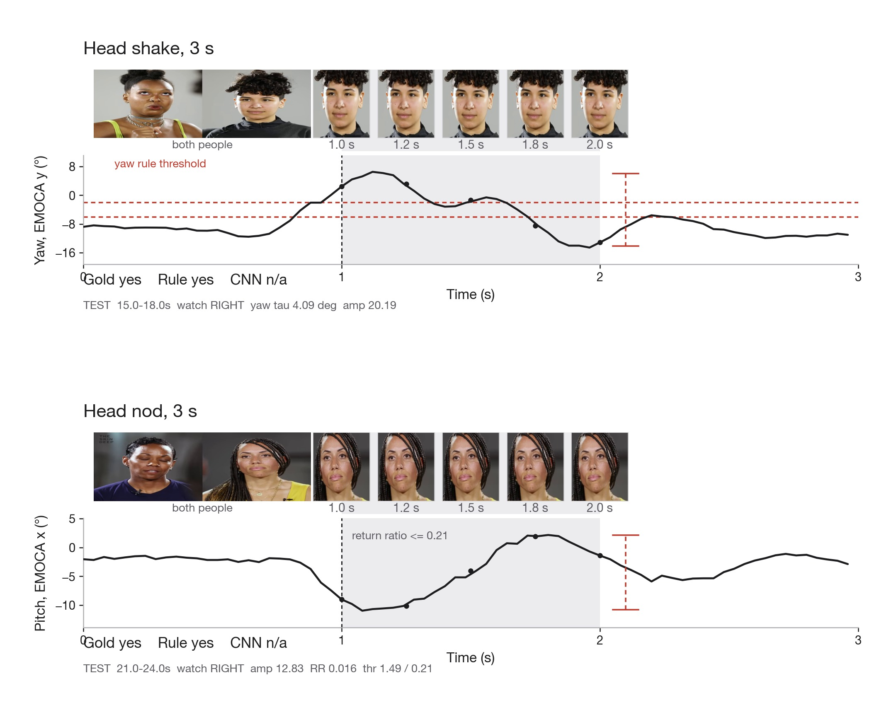
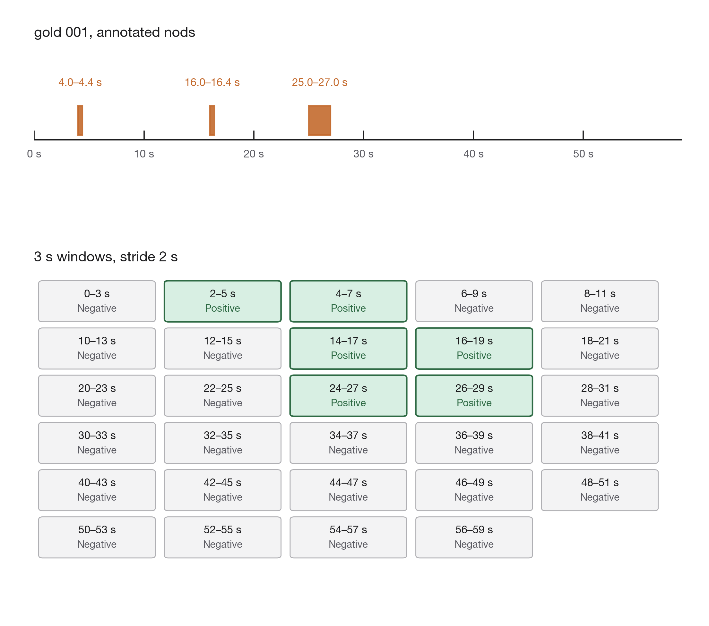
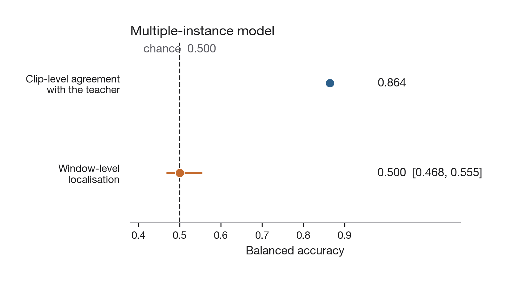
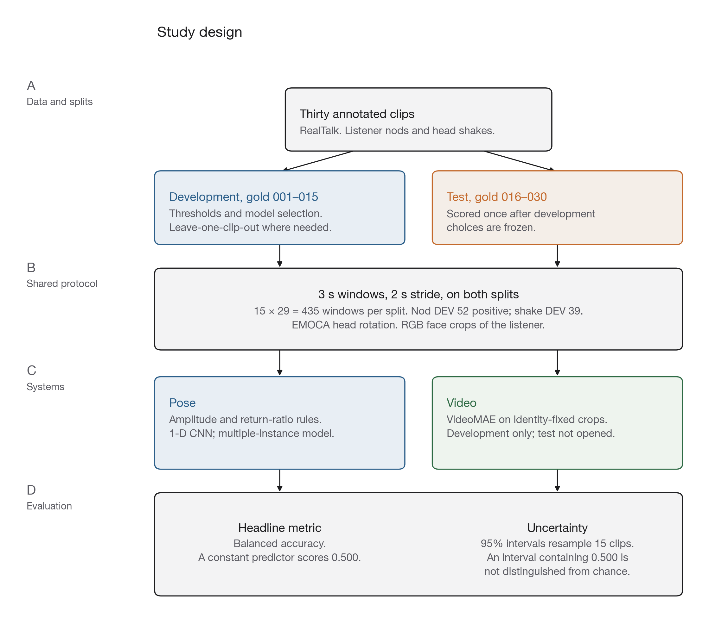
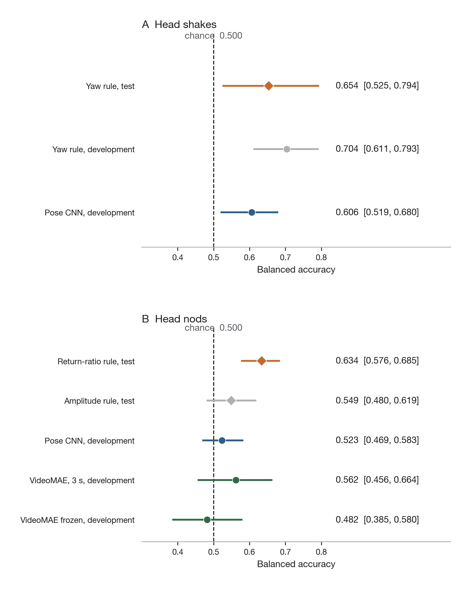
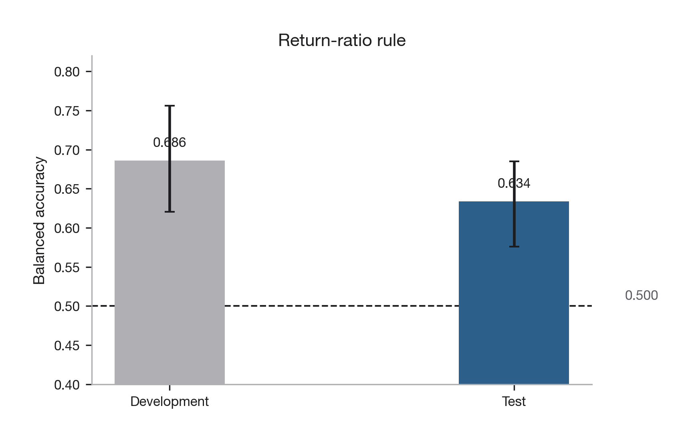

Multimodal
Backchannel
Recognition
Recognising listener head nods and head shakes from head pose and video in natural conversation.
Did this listener nod or shake?
The study is windowed listener gesture recognition on Columbia RealTalk. A nod or shake lasts about one second. The decision unit is a three second window. Pose and RGB are two encodings of the same camera, not two independent sensors. The approved title says prediction. The executed task is recognition inside an observed window.

Interval labels on 30 RealTalk clips, 15 DEV and 15 TEST, scored as 3 s windows with a 2 s stride (435 windows per split).
A yaw amplitude rule that recognises head shakes on locked TEST, and a two-feature rule (amplitude plus return) that recognises head nods.
The same windows used to show that clip-level weak labels copy their teacher and do not localise, and that identity-corrected VideoMAE stays at chance as a main system.
A three second window.
Each clip is cut into 3 s windows at a 2 s stride, 29 windows per clip. A window is positive if it overlaps a hand-marked gesture interval. The pitch trace below is one stored TEST excerpt. The headline scores use the short windows, not a single decision on the whole minute.

Thirty clips, read as intervals.
is an interval: a clear nod or a clear shake, timed inside the excerpt. A 3 s window that overlaps that interval is positive. sits in the negative class with stillness.
DEV gold_001 to gold_015. TEST gold_016 to gold_030. Nods: 52 DEV and 69 TEST positives. Shakes: 39 DEV and 40 TEST positives. One annotator. Chance for any constant predictor is balanced accuracy 0.500.
State the motion, then freeze it.
Shake uses a single amplitude threshold on EMOCA yaw (channel y, τ = 4.09°), selected on DEV. Nod needs two features: peak-to-peak amplitude and a return ratio that asks whether the head came back. Amplitude alone on pitch does not clear chance.
Nod amplitude only is 0.549 [0.480, 0.619] and includes chance. The nod TEST split was evaluated under three rule configurations. No further nod system was scored on TEST.
A network that has to find the return.
A 1D CNN is scored leave-one-clip-out on DEV. Giving it the return ratio as an extra channel or a scalar branch does not lift nod performance. Widening the receptive field does not either. TEST was not scored for these networks.
The face has to be the listener.
Largest-face Haar crops often showed the speaker. Those RGB runs are withdrawn. Identity-corrected VideoMAE is development only. The configurations treated as main systems all have intervals containing 0.500. One 1.5 s no-flip variant reached 0.571 [0.509, 0.669]. That was one development configuration among several, uncorrected for multiplicity, and not scored on TEST.
Clip labels do not say where.
The student copied the teacher. The teacher never marked which 3 s window held the nod. Extra bags of the same clip-level kind do not supply that information.

TEST is confirmation, not selection.
Rules and models are chosen on DEV. TEST is scored once per system. The nod TEST split has three rule evaluations: a transferred long-window threshold, the amplitude-only rule, and the two-feature rule. Audio is mixed soundtrack, DEV only, and stays at chance.

The lock is part of the artefact.
Locked TEST directories sit on a write-refusal list. The headline metric is balanced accuracy. Chance is 0.500 for any constant predictor. Intervals are clip-level bootstrap, 15 clips, 2000 resamples. An interval that includes 0.500 is not distinguished from chance.
Both gestures, one protocol.
Diamonds are TEST. Circles are DEV. The nod amplitude interval includes 0.500. The two-feature nod interval does not.

Yaw is cleaner than pitch.
Horizontal shake has fewer lookalikes in a seated conversation. Vertical nod shares pitch excursion with looking down, leaning and settling. Amplitude is enough for shake. Nod needs the return. The two-feature rule was selected on DEV after that comparison, then frozen for TEST.

Head pitch on a stored TEST clip.
This instrument replays stored pose from a gold TEST excerpt. The amplitude threshold drawn here is the older excerpt-level cut (16.35°), not the 3 s two-feature rule. Pose CNN and VideoMAE numbers in this panel are saved clip-level predictions from that earlier protocol. They are not the thesis headlines. Drag the plot to move through the sequence.
Head pitch
The constraints are part of the result.
- Gold setFifteen clips per split. Intervals are wide. No significance is claimed.
- AnnotatorOne person labelled the gold set. There is no second-reader agreement.
- Nod TESTThree rule evaluations on the nod TEST split. The 0.634 figure carries more selection optimism than a single scoring.
- CameraPose and RGB are two encodings of one camera, not two sensory modalities.
- AudioAcoustic systems use the mixed soundtrack. They stay at chance on DEV and were not taken to TEST.
Suggestions, not a plan.
These are places further annotation or analysis would add most. They are suggestions for other researchers, not work remaining in this dissertation.
- 01Test the return-ratio account on stored false positives.
- 02More human intervals, not more weak clip labels.
- 03Speaker-separated audio on the same windows.
- 04Shake at greater scale, and a nested nod threshold estimate.
Recognition could later condition a generative listener. The detectors here are not accurate enough for that, and they operate on observed windows, not forecasts.